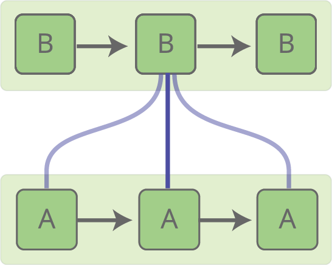
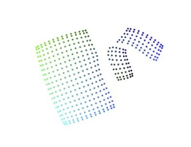
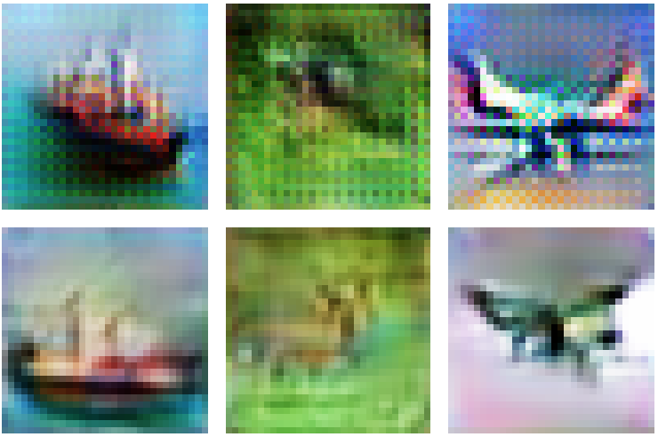
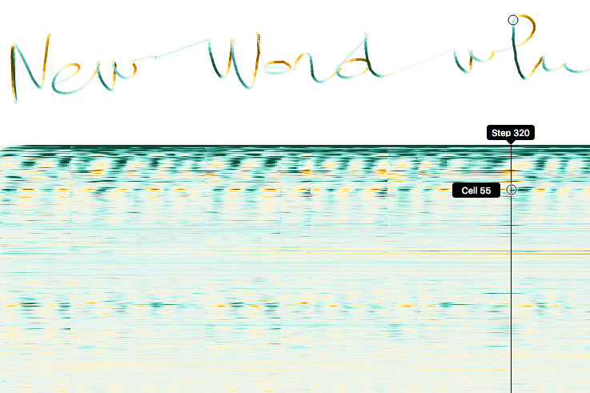

Distill
Posted on March 20, 2017
I do not plan to write more of my deep learning articles on this site. Instead, I will be co-editor of Distill, a visual, interactive journal for machine learning research emphasizing human understanding. I believe this will allow me to better serve the community.
If you’ve enjoyed my blog, you should check out the first few articles on Distill. I think they’re substantially better than the content here:


How to Use t-SNE Effectively

Deconvolution and Checkerboard Artifacts

Four Experiments in Handwriting with a Neural Network
I’m extremely proud of colah.github.io, and I feel deeply privileged by the interest the community has had in it. These articles have been read more than two million times, and some have become standard references, used in university courses around the world.
So, this isn’t something I’m doing lightly and I want to explain why I’ve decided to move on to Distill.
Background
The truth is, I’ve had a lot of insecurity about my work. As far as I can tell, my primary contribution to the research community is knowing how to draw in addition to understanding machine learning. Certainly, I’ve had some useful research contributions. But the place I seem to thrive is explaining and digesting the discoveries of others. It’s hard not to feel like that’s of secondary importance to research, in an area called, well, research.
About a year ago, events brought these insecurities to a head. I began to worry that, by focusing on exposition, I was failing to do the best work I could. Often, my work felt illegitimate in some way. I tried to set this aside, but I couldn't just do so. I had to respond, if only in my head, with a justification.
My response to these insecurities is the idea of Research Debt.
As people rush out new discoveries without putting effort into communication, they produce research debt. The field becomes noisy and energy draining to follow. In such an environment, I think it’s extremely valuable for there to be people focused on human understanding, clarity, and communication -- a kind of “research distiller” role.
Reason 1: Growing an Ecosystem
Framed this way, it doesn’t just seem like an important thing for me to do. It’s something I’d like to see more people doing. Of course, there are a number of people sprinkled through the field fulfilling this role to greater and lesser extents, but it’s usually a small unofficial part of what they do. And speaking with people, I began to discover that I wasn't the only one with these insecurities and experiences of pressure to focus elsewhere.
I’d like for there to be a lot more support for them. I’d especially like to support people who might be considering this as a career path. While there are awesome jobs available if you become an excellent “research distiller,” the mechanisms are unofficial and invisible from the outside, and that’s a big gamble to take. We can do better than this.
Distill is a chance to start building this ecosystem. The Distill Journal will provide a venue for this kind of work, legitimizing it as a real academic contribution. The Distill Prize (which I’m contributing $25,000 to the formation of) will recognize outstanding work in this area. There’s a lot more to do, but this is a first step.
Reason 2: Collaboration
Science isn’t a one person sport: it’s better when we work together. This is true for novel research, and it’s also true for explanations. It’s doubly true when you’re explaining novel research.
Unfortunately, personal blogs aren’t conducive to this. They’re always going to give a lot more credit to the blog’s owner. This is also true for organizational blogs: they exclude collaborators outside the organization, and often de-emphasize the individual contributors.
Distill is a neutral platform. Just like a traditional paper, we list the authors and their affiliations at the top. Distill steps into the background, to put the focus on the authors and their work.
Reason 3: Separating Myself
As colah.github.io has grown in prominence… Well, it’s been very rewarding, but it’s also been a bit uncomfortable.
For one thing, it’s created very high standards for my writing. Most of my articles took 50-200 hours to write. I feel like I needed to live up to that quality with every post, but that means I can’t put out thoughts without investing a huge amount of energy.
It also feels a bit inappropriate to talk about other issues. I have very strong feelings about animal welfare which others may disagree with. I also have unusual experiences, like dropping out of university to support an accused terrorist, that I might like to write about. But it feels kind of like an abuse to use the attention the deep learning community has given me as a platform for these other topics.
By shifting my serious writing about deep learning to an independent venue, it feels like I have more space to talk about my personal interests. Perhaps we’ll see “Vegan Cooking with Chris” in the future.